Garden der inspiratie
Wat mij inspireert, op meerdere rijen, met ieder een uitleg. Oprecht geprobeerd het kort te houden per item.
Wat mij inspireert, op meerdere rijen, met ieder een uitleg. Oprecht geprobeerd het kort te houden per item.
Placeholder tekst
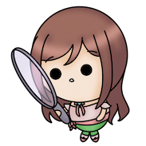
Druk op een item om er meer over te lezen!
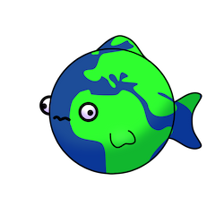
Geologie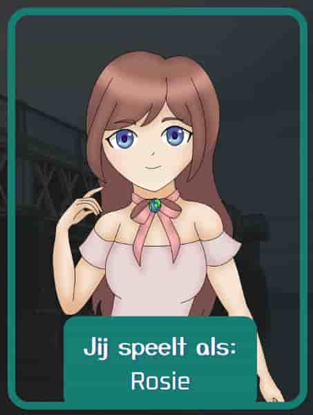
Games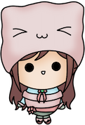
Coderen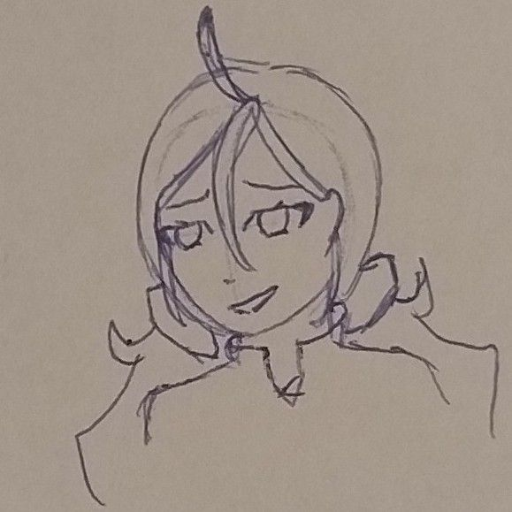
Tekenen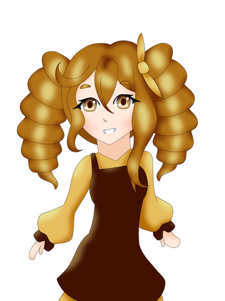
Character design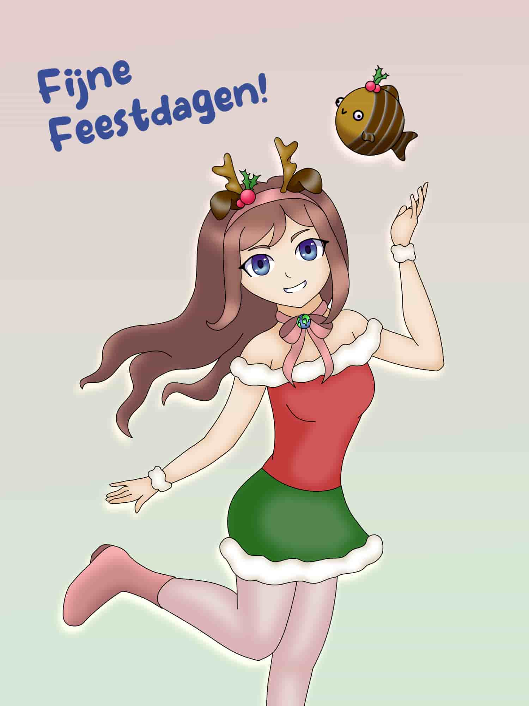
J-fashion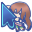
Minecraft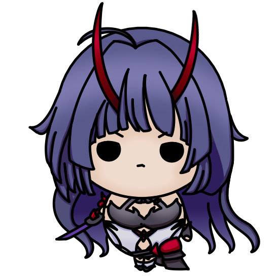
Honkai Impact 3rd Pt.1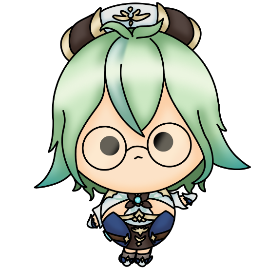
Genshin Impact 1.0-4.5 Civ 4
Civ 4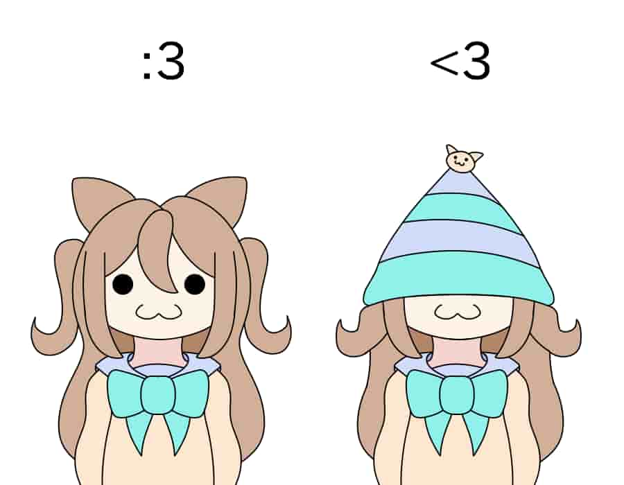
Vedal987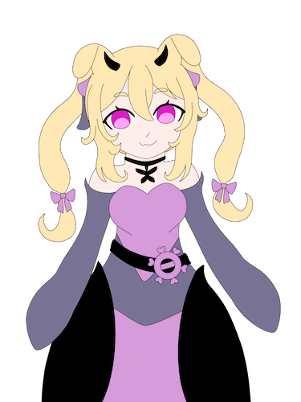
CerberVT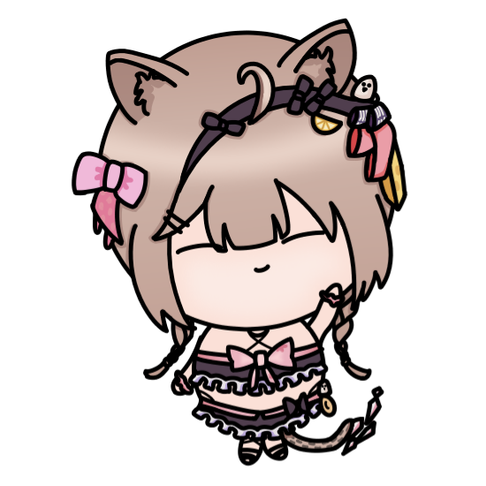
Kawaii in de breedste zin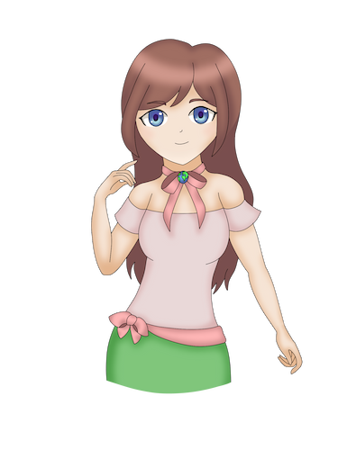
HimeKaji/Suna kei/Shojo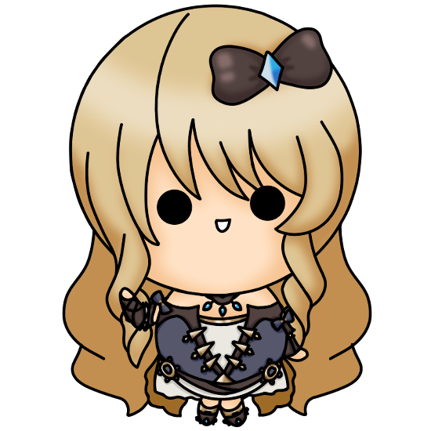
Steampunk